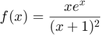
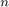

Contents
Exemple de integrare numerica
Foloseste diferite metode de integrare Vom integra functia

pe intervalul [0,1].
f = @(x) x.*exp(x)./(x+1).^2;
Consideratii legate de formulele repetate
O implementare directa a formulei trapezului sau a formulei lui Simpson are dezavantajul ca  este dificil de determinat daca se doreste atingerea unei precizii date, tol
function I=trapezes(f,a,b,n) %TRAPEZES trapezes formula %call I=trapezes(f,a,b,n); h=(b-a)/n; I=(f(a)+f(b)+2*sum(f([1:n-1]*h+a)))*h/2;
function I=Simpson(f,a,b,n) %SIMPSON composite Simpson formula %call I=Simpson(f,a,b,n);
h=(b-a)/n; x2=(1:n-1)*h+a; x4=(0:n-1)*h+a+h/2; I=h/6*(f(a)+f(b)+2*sum(f(x2))+4*sum(f(x4)));
Implementare
Pentru a evita calculul lui vom proceda pas cu pas dubland la fiecare pas numarul de subintervale si stabilind o relatie de recurenta. Functia pentru metoda trapezelor este
function t=TrapezoidalRule(f,a,b,tol) %TRAPEZOIDALRULE composite quadrature using the trapezoidal rule %t=TrapezoidalRule(f,a,b,tol); computes an approximation of %int_a^b f(x) dx to a relative tolerance tol using the %composite trapezoidal rule.
h=b-a; s=(f(a)+f(b))/2; t=h*s; zh=1; told=2*t; while abs(told-t)>tol*abs(t), told=t; zh=2*zh; h=h/2; s=s+sum(f(a+(1:2:zh)*h)); t=h*s; end;
function s=SimpsonsRule(f,a,b,tol) %SIMPSONSRULE composite quadrature using Simpson’s rule %s=SimpsonsRule(f,a,b,tol); computes an approximation of %$\int_a^b f(x) dx$ to a relative tolerance tol using the %composite Simpson’s rule.
h=(b-a)/2; s1=f(a)+f(b); s2=0; s4=f(a+h); s=h*(s1+4*s4)/3; zh=2; sold=2*s; while abs(sold-s)>tol*abs(s), sold=s; zh=2*zh; h=h/2; s2=s2+s4; s4=sum(f(a+(1:2:zh)*h)); s=h*(s1+2*s2+4*s4)/3; end
Metoda trapezelor
format long
TrapezoidalRule(f,0,1,1e-8)
ans = 0.359140913831625
Metoda lui Simpson
SimpsonsRule(f,0,1,1e-8)
ans = 0.359140914057362
Metoda lui Romberg
[I,nfev]=Romberg(f,0,1,1e-8)
ans =
Columns 1 through 3
0.339785228557381 0 0
0.353083866578705 0.357516745919146 0
0.357515195871924 0.358992305636330 0.359090676284142
0.358726477164210 0.359130237594973 0.359139433058882
0.359036783555770 0.359140219019623 0.359140884447933
0.359114848619295 0.359140870307137 0.359140913726304
Columns 4 through 6
0 0 0
0 0 0
0 0 0
0.359140206975942 0 0
0.359140907485854 0.359140910232952 0
0.359140914191040 0.359140914217335 0.359140914221230
I =
0.359140914221230
nfev =
33
Cuadratura adaptiva (Simpson)
[Q,fcount] = adquad(f,0,1,1e-8)
Q =
0.359140914218223
fcount =
61